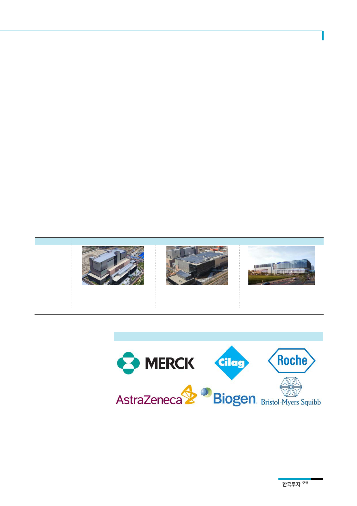

삼성바이오로직스(207940)
III. 투자포인트
출발선부터가 다르다
1. 2018년, CMO 글로벌 최강자로 등극한다
1) CMO업계의 금수저 삼성바이오로직스
동사는 설립 단계부터 시장을 쉽게 주도할 수 있는 환경이었다. CMO사업은 반도체, 디스
플레이 산업과 마찬가지로 공장 설립에 수천억원의 자금이 소요되며 양산능력과 품질관리
가 매우 중요하다. 동사의 2대주주인 삼성전자는 30조원에 달하는 현금을 보유하고 있으
며 양산과 품질관리에 있어 이미 충분한 노하우를 보유하고 있다. 또한 동사는 최대주주
인 삼성물산에 높은 퀄리티의 생산설비를 비교적 저렴한 가격에 발주할 수 있어 설비투자
와 감가상각비 측면에서 타사 대비 유리한 위치에 있다.
바이오의약품은 생산환경의 미세한 차이에 따라서도 품질이 달라질 수 있기 때문에 우수
한 설비확보는 품질관리의 핵심이다. 동사는 EMA 및 FDA로부터 공장설비에 대해 7건의
승인을 받은 바 있으며 1공장은 FDA의 허가과정에서 483건의 검사항목에서 단 한 건의
이상도 없었다는 점에서 생산설비에 대한 경쟁력을 갖추었다고 볼 수 있다. 그 결과 동사
는 CMO산업 내에서의 짧은 역사에도 불구하고 삼성이라는 브랜드 가치를 기반으로 BMS,
Roche와 같은 글로벌 제약사들을 고객사로 확보할 수 있었다.
<표 5> 삼성바이오로직스 CMO 공장
1 공장
2 공장
3 공장
(단위: 십억원)
연생산능력
착공 시기
준공 시기
공사비용
30,000L
2011 년 5 월
2012 년 6 월
300
자료: 삼성바이오로직스, 한국투자증권
152,000L
2013 년 10 월
2015 년 2 월
650
[그림 15] 삼성바이오로직스의 주요 파트너 및 고객사들
180,000L
2015 년 11 월
2018 년 예상
730
자료: 삼성바이오로직스, 한국투자증권
13